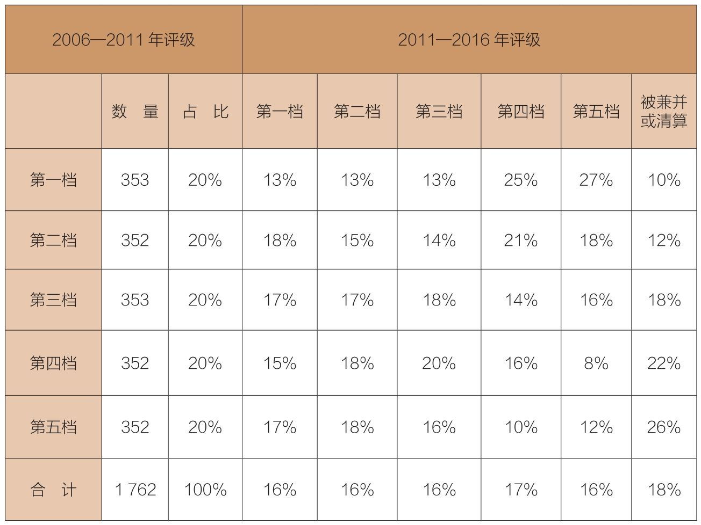
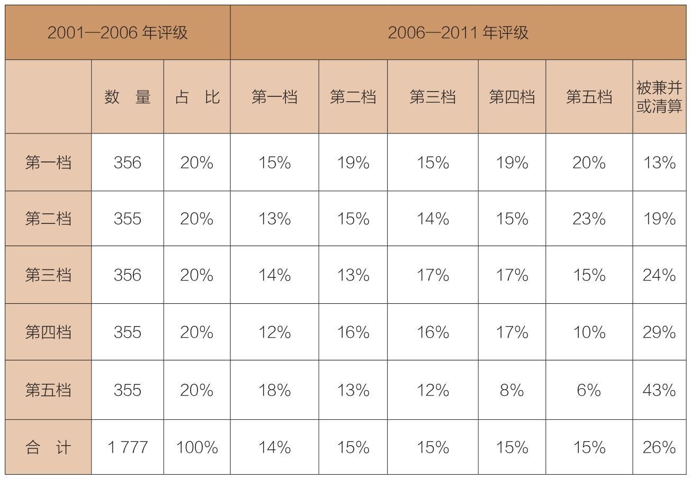

投资后，如果先获利55%后亏损34%，那么投资者的收益并非21%而只有2%。这是为什么？
在风光无限的牛市里，越是看重短期业绩，你的钱会消失得越快。
在选择共同基金的时候，大多数投资者似乎都愿意凭借令人振奋的短期业绩，而不是长期的持续性收益（虽然这类资料也有缺陷）。2016年，在投资者的全部资金中，150%投向了被晨星评为4星或5星的基金。
这些星级的评定基础是此前3年、5年和10年期基金收益记录的综合（对于新近设立的基金，评定期限最短可以为3年）。近2年的业绩在评级中要占35%（针对存续期长达10年或更久的基金），或是65%（针对存续期只有3～5年的基金）的份额。这意味着，基金评级更关注短期业绩表现。
如果按照以短期业绩为准评出的星级挑选基金，那么成功的概率有多高呢？答案是非常低！《华尔街日报》2014年的一项研究表明，2004年被评为5星的基金，只有14%在10年后仍被评为5星，36%的基金评级下降为1星，其余50%的基金评级下降到3星以下。是的，基金业绩具有均值回归的倾向，甚至会回归到平均水平以下。
与基金收益有关的其他数据也证实了均值回归的力量。表11-1统计了所有美国主动型股票基金，在两个连续但不重叠的5年区间（2006—2011年和2011—2016年）的表现。
我们将每个阶段的收益划分为五档，第一档为业绩最好的基金，第五档为业绩最差的基金。我们再观察初始基金的分类在第二个5年发生了怎样的变化。
如果过往业绩出众的基金在未来表现依然优异，那我们应该会看到基金业绩的持续性。换句话说，第一个5年表现优异的基金，在第二个5年表现应该也不错。反之，亦然。然而，表11-1显示的情况并非如此，均值回归具有持续性。
第一个5年处于第一档的基金，在第二个5年仅有13%仍停留在第一档，有27%的基金降到第五档，另有25%的基金落入第四档，还有10%的基金被兼并或清算。
这次我们从下方看起。第一个5年处在第五档的基金，有17%在第二个5年升入第一档，比例高于仍停留在这一档的基金（12%），另有26%的基金被淘汰。很容易看出五档基金收益的随机分布特征，多数在16%左右，少于第一个5年开始的20%。这是因为第一个5年的基金，有18%在第二个5年停止运营了。
看完表11-1的数据，你是否会怀疑这只是个案，而不太可能重复发生？我也有同样的疑问。因此，我观察了两个更早的连续但不重叠的5年：2001—2006年和2006—2011年（见表11-2）。在2001—2006年处于第一档的基金，仅有15%在第二个5年仍处在第一档，有20%降到第五档，还有13%（45只）没有存活下来。
表11-1 均值回归：第一个5年（2006—2011年）与第二个5年（2011—2016年）

注：被兼并或清算的基金合计313家。
在2001—2006年处在第五档的基金，有18%在第二个5年升到第一档，仅有6%仍处在第五档，还有43%（152只）没有存活下来。
只要浏览这两张表格，你就会看到，均值回归一直重复发生。正如表11-1所示，第二个5年的结果基本是随机的。在所有5个档次里，绝大多数基金赚取了后续收益，这些后续收益很大程度上相对平均地分布在每一档上（13%～18%）。
从这个数据里，我们可以总结出，均值回归在基金收益方面发挥着重要作用。无论是第一档的基金，还是第五档的基金，它们的表现难以持续。我不太容易感到意外，但这些数据的确让我吃惊。它们反驳了大多数投资者和投资顾问的预期：基金经理的能力可以持续。结果证明，我们只不过是一群“随机漫步的傻瓜”(1)。
表11-2 均值回归：第一个5年（2001—2006年）和随后5年（2006—2011年）对比

注：被兼并或清算的基金合计454家。
结论很清楚：均值回归的确存在。当一只基金收益率明显高于行业平均水平时，随后通常都会回归甚至低于平均水平。如前一章所述，绝大多数共同基金的收益落后于以整体股票市场为投资对象的指数基金。因此，我们需要记住的是：共同基金领域的明星很少是恒星，多数不过是彗星。它们如闪电般划过天空，便消逝在茫茫的天际之中，只留下一丝淡淡的痕迹。
随着时间的流逝，真相也变得日渐清晰。基金收益似乎完全是随机的。的确，少数情况与技巧有关，但这需要几十年的时间来判断。在那之前，我们不知道一只基金的成功有多少可以被归结于运气，有多少归功于专业水平。
如果你有不同意见，并且决定投资于一只近期拥有超级业绩的基金，那么你可以这样反问自己：
◆原来的基金经理、人员和策略是否依旧？
◆如果基金资产扩大了许多倍，那么同样的结果还能够实现吗？
◆费率或换手率高到什么程度会损害基金业绩？低到什么程度会提升基金业绩？
◆基金经理曾经追捧的股票，是否依然是股票市场的宠儿？
总之，根据短期业绩挑选共同基金并不可靠，最终的投资结果经常远远落后于市场。而对指数基金而言，超越市场的表现只不过是平常事。
如果我们扪心自问，或许就能明白为什么我们会难以接受均值回归这件事，因为这种现象不只体现在基金收益上，而是涉及我们生活的每个角落。2013年，诺贝尔经济学奖得主丹尼尔·卡尼曼出版了《思考，快与慢》一书，书中回答了这一问题：“我们的大脑倾向于因果关系的解释，而不擅长处理纯粹的数据。当我们关注某一事件时，大脑就会去寻求该事件发生的原因……但它们（基于因果关系的解释）会出错，因为实际情况，可能就是不涉及因果的均值回归。”
当本书将要印刷时，《经济学人》评论员巴德伍得（Buttonwood）做了许多笔记：
“假设你挑选了截至2013年3月的12个月中业绩表现最好的25%的美国股票共同基金。在后续12个月里，到2014年3月，这些基金中只有25.6%仍然处于业绩最好的那一档。在再之后的12个月里，这一比例将陆续下降为4.1%、0.5%和0.3%。如果你最初挑选的是业绩最好的50%的基金，那么结果也很类似：业绩在平均水准以上的基金很难继续保持。
“假设你挑选了一只到2012年3月为止5年期业绩最好的基金，请问在随后5年（截至2017年3月）继续保持这种业绩的基金的占比是多少？”
答案是22.4%。的确如此，截至2012年3月的5年期业绩出众的基金，有高达27.6%的基金在随后5年落入业绩最差的那一档。
有句老话说：“过去业绩不能代表未来。”它不是一句格言，而是数学规则。
听听《随机漫步的傻瓜》（Fooled by Randomness）的作者塔勒布是怎么说的：
“随便抛掷一枚硬币，如果正面向上，基金经理在1年期就可以赚到10 000美元，如果反面向上，就亏损10 000美元。第一年，我们召集10 000名基金经理参加这场比赛。到第1年年末，我们确信将有5 000名经理赚到10 000美元，5 000名经理的资产减少10 000美元。接着，我们再来进行第2年的比赛。将有2 500名经理连续第二次赚到10 000美元；第3年将有1 250人；第4年，625人；第5年，313人。以此类推。
“如果一切条件不变，我们将找到313名连续5年赚钱的经理。到了第10年，1 000人就只有10个人（0.1%）赚钱了。显然，这纯粹是运气……即使所有基金经理全都能力有限，也会有少数基金经理业绩优秀……在一个既定的股票市场上，具有良好历史业绩的经理人数，更多地取决于初始人数，而不是他们的能力。”
如果说上面的论述偏重于理论的话，那么我们再从实践角度看看这个问题。《货币》杂志刊载了投资管理公司AJO执行合伙人泰德·阿伦森（Ted Aronson）的专访：
“问：你曾经说过，投资于主动型基金（相对于指数基金）完全依赖于信心。应该怎样理解这句话呢？
“答：在正常情况下，要从统计上证明一个基金经理的成功源于能力，而不是运气，需要20～800年的时间（去检验其长期业绩）。如果要以95%的可信度证明某位基金经理的成功不是来自运气，那么最少需要1 000年——这要远远超过大多数人所说的“长期”；即便是以75%的可信度验证其能力，你也得花上16～115年去追踪他的业绩……投资者必须了解基金业真正的运作模式。
“问：你主要投资什么？
“答：先锋公司的指数基金。我投资先锋指数500基金已经23年了。如果考虑税金，结果就更明显了。我认为，指数基金是毋庸置疑的赢家，主动型基金根本没有胜算。”
(1)纳西姆·尼克拉斯·塔勒布（Nassim Nicholas Taleb）的一部畅销书的名字。